from gturtle import * |
Importiert das Turtle-Modul, das die nötigen Funktionen und Klassen für das Zeichnen enthält. | ||||||||||||
makeTurtle() |
Erzeugt ein neues Turtle-Objekt, das für das Zeichnen verwendet wird. | ||||||||||||
hideTurtle() |
Versteckt die Turtle am Ende des Programms. | ||||||||||||
forward(100) |
Turtle bewegt sich um 100 Einheiten vorwärts. |
||||||||||||
back(100) |
Turtle bewegt sich um 100 Einheiten rückwärts. |
||||||||||||
left(60) |
Turtle dreht sich um 60 Grad nach links. |
||||||||||||
right(50) |
Turtle dreht sich um 50 Grad nach rechts. |
||||||||||||
setPenWidth(10) |
Setzt die Stiftgröße auf 10 Einheiten. |
||||||||||||
setPenColor("red")
|
Setzt die Stiftfarbe auf Rot. Andere mögliche Farben: 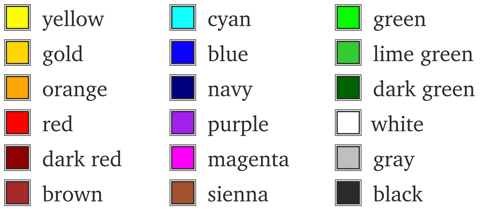 |
||||||||||||
setPenColor("#FF0000")
|
Setzt die Stiftfarbe auf die Farbe mit dem Hexadezimal-Code #FF0000.
#FF0000 ist der Hexadezimal-Code für Rot.
Dies hilft uns, die Stiftfarbe genauer zu wählen. Hier findest du den Hexadezimal-Code für jede mögliche Farbe. Vergiss nicht, das # am Anfang zu schreiben!
|
||||||||||||
clear("red")
|
Setzt die Hintergrundfarbe auf Rot. | ||||||||||||
clear("#FF0000")
|
Setzt die Hintergrundfarbe auf die Farbe mit dem Hexadezimal-Code #FF0000. |
||||||||||||
speed(5) |
Legt die Geschwindigkeit des Zeichnens fest.
Du kannst eine Zahl zwischen 1 und 10 eingeben, wobei:
Besondere Fälle:
|
||||||||||||
dot(20) |
Turtle zeichnet einen Punkt mit einem Durchmesser von 20 Einheiten. |
||||||||||||
leftArc(100,60) |
Turtle bewegt sich nach links und zeichnet einen Kreisbogen mit einem Radius von 100
Einheiten und einem
Winkel von 60 Grad. |
||||||||||||
rightArc(100,60) |
Turtle bewegt sich nach rechts und zeichnet einen Kreisbogen mit einem Radius von 100
Einheiten und
einem Winkel von 60 Grad. |
||||||||||||
penUp() |
Hebt den Stift an. Nachdem dieser Befehl ausgeführt wurde, wird nichts gezeichnet. |
||||||||||||
penDown() |
Setzt den Stift wieder ab. | ||||||||||||
setPos(50,60) |
Das Zeichenfeld im Turtle-Modul lässt sich als
Koordinatensystem vorstellen.
Mit diesem Befehl bewegt sich die Turtle von seiner aktuellen Position zu den Koordinaten (50,60),
wobei 50 der x-Wert und 60 der y-Wert ist.
|
repeat-Schleifen
|
|||||||||||
|---|---|---|---|---|---|---|---|---|---|---|---|---|---|
repeat 4:
forward(100)
right(90)
|
Wenn du bestimmte Befehle wiederholen möchtest,
kannst du eine repeat-Schleife nutzen.
Statt die gleichen Befehle 4-mal zu schreiben: forward(100)Achte immer auf die Einrückung! |
Verschachtelte repeat-Schleifen
|
|||||||||||
repeat 5:
repeat 4:
forward(100)
right(90)
left(36)
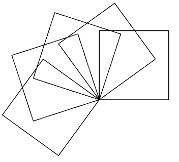
|
Die äußere Schleife wird fünfmal durchlaufen. In jedem Durchgang dieser Schleife wird zunächst die
innere Schleife vollständig ausgeführt, die ein Quadrat zeichnet.
Nachdem ein Quadrat vollständig gezeichnet wurde, führt der Befehl left(36) eine Drehung
um 36 Grad nach links durch.
Diese Kombination aus dem Zeichnen eines Quadrats und der anschließenden Drehung um 36
Grad wird insgesamt fünfmal wiederholt, wodurch
ein Muster aus fünf Quadraten entsteht, die jeweils
um 36 Grad versetzt sind.
|
Figuren mit einer Farbe füllen | |||||||||||
setFillColor("red")
startPath()
repeat 4:
forward(100)
right(90)
fillPath()
|
setFillColor("red") setzt die Füllfarbe auf Rot.
Bevor du mit dem Zeichnen der Figur beginnst, musst du der Turtle sagen, dass alles, was von jetzt an gezeichnet wird, mit einer Farbe gefüllt werden soll. Das machst du mit dem Befehl startPath().
Sobald du die Figur fertig gezeichnet hast, verwendest du den Befehl fillPath(). Dies
signalisiert die Turtle, dass die Figur fertig ist und
sie den eingeschlossenen Bereich mit der
ausgewählten Füllfarbe ausmalen soll.
|
Funktionen definieren | |||||||||||
def quadrat():
repeat 4:
forward(100)
right(90)
quadrat()
|
Die Verwendung von Funktionen ist von grosser
Wichtigkeit, denn du vermeidest dadurch, dass du
gleichen Code mehrmals im Programm
hinschreiben musst (Codeduplikation) und du
kannst damit Probleme in kleinere, leichter zu
lösende Teilprobleme zerlegen.
Die Funktionsdefinition beginnt mit dem Keyword def.
Dann folgt der Name, eine sogenannte Parameterklammer und ein Doppelpunkt. Die Befehle im Funktionskörper bilden einen Programmblock und sie müssen daher eingerückt sein. Das Quadrat wird jedoch erst im Programm gezeichnet, wenn die Funktion mit quadrat()
aufgerufen wird.
|
Funktionen innerhalb anderer Funktionen aufrufen | |||||||||||
def quadrat():
repeat 4:
forward(100)
right(90)
def zwei_quadrate():
repeat 2:
quadrat()
forward(100)
zwei_quadrate()
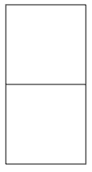
|
Funktionen können innerhalb anderer Funktionen
aufgerufen werden.
In diesem Code gibt es zwei Funktionen. Die Funktion quadrat() definiert ein Quadrat.
Die Funktion zwei_quadrate() ruft quadrat()
zweimal auf, um zwei Quadrate zu zeichnen.
Nachdem das erste Quadrat gezeichnet wurde,
bewegt sich die Turtle um 100 Einheiten vorwärts,
bevor das zweite Quadrat gezeichnet wird.
|
Variablen definieren | |||||||||||
s = 100
repeat 4:
forward(s)
right(90)
|
Damit du die Seitenlänge des Quadrats flexibel
anpassen kannst, möchtest du diese mit der
Variablen s festlegen.
Dazu machst du eine Zuweisung, beispielsweise s = 100 für eine Seitenlänge von 100 Einheiten oder
s = 200 für eine Seitenlänge von 200 Einheiten.
Dabei wird der Name s mit der Zahl 100 oder 200
verbunden, und s kann dann im Programm
mehrfach verwendet und bei Bedarf auch verändert
werden.
|
||||||||||||
s = 40
repeat 4:
forward(s)
right(90)
s = s + 60
repeat 4:
forward(s)
right(90)
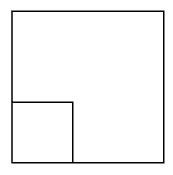
|
Der Wert der Variablen kann sich im Laufe des
Programms durch eine erneute Zuweisung ändern.
Du kannst bei der erneuten Zuweisung sogar den alten Wert verwenden, also s = s + 60 schreiben.
s ist gleich 40, und dann, nachdem die erste
Schleife beendet ist, wird die Größe der Variable s
um 60 erhöht. Das bedeutet, s ist jetzt 100.
Der Code zeichnet zuerst ein Quadrat mit einer Seitenlänge von 40 Einheiten, erhöht dann die
Seitenlänge auf 100 Einheiten und zeichnet ein
zweites, größeres Quadrat.
|
||||||||||||
s = 20
repeat 10:
repeat 4:
forward(s)
right(90)
s = s + 30
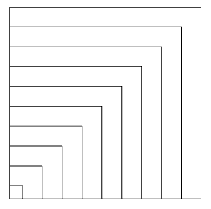
|
s ist am Anfang 20, und bei jedem Durchlauf der
äußeren Schleife wird es um 30 größer.
Die innere Schleife zeichnet ein Quadrat mit der Seitenlänge s.
|
Eingabe von Werten | |||||||||||
s = inputInt("Gib die Seitenlaenge ein")
repeat 4:
forward(s)
right(90)
|
Variablen werden auch zum Einlesen von Werten verwendet.
Mit der Anweisung s = inputInt("Gib die Seitenlänge ein") öffnet sich ein Eingabedialog, in dem du eine Zahl eingeben kannst.
Beim Drücken des OK-Buttons schließt sich das Dialogfenster und der eingegebene Wert wird der Variablen s zugewiesen.
Dieser Code zeichnet ein Quadrat mit der Länge, die du eingegeben hast. |
Funktionen mit Parameter definieren | |||||||||||
def quadrat(s):
repeat 4:
forward(s)
right(90)
quadrat(100)
|
Du kennst bereits Parameter von vielen Turtle Befehlen.
Beim Befehl forward(s) kannst du für s
verschiedene Zahlen einsetzen.
Mit forward(100) bewegt sich die Turtle 100
Schritte vorwärts. Der Befehl forward(s) hat den
Parameter s.
Auch selbst definierte Funktionen können Parameter haben. Die Funktion quadrat(s) kann viel flexibler
eingesetzt werden, da du die Seitenlänge beim
Funktionsaufruf angeben kannst, also zum Beispiel
quadrat(100) oder quadrat(70).
|
||||||||||||
def quadrat(s, c):
setPenColor(c)
repeat 4:
forward(s)
right(90)
quadrat(100, "red")
|
Eine Funktion kann auch mehrere Parameter haben.
In diesem Beispiel definierst du eine Funktion
quadrat(s, c) mit zwei Parametern: s für die
Seitenlänge des Quadrats und c für die Stiftfarbe
|
Zufallszahlen | |||||||||||
from gturtle import *
from random import randint
makeTurtle()
x = randint(-200,200)
y = randint(-200,200)
setPos(x,y)
dot(50)
|
from random import randint importiert die Funktion randint aus
dem Modul random. Dadurch können zufällige
Ganzzahlen generiert werden.
randint(-200,200) generiert eine zufällige Ganzzahl zwischen
-200 und
200 und diesen wird x und y zugewiesen.
Dieser Code zeichnet einen Punkt mit einem Durchmesser von 20 Einheiten an einer zufälligen
Position.
|
for-Schleifen Diese Schleifen sind flexibler als die repeat-Schleife, die du bereits kennst.
|
|||||||||||
for _ in range(n):
Anweisung 1
Anweisung 2
...
|
Wenn du eine bestimmte Anzahl von Befehlen wiederholen möchtest, kannst du die for-Schleife nutzen.
Diese for-Schleife wiederholt sich viermal und macht dasselbe wie die repeat-Schleife:
repeat 4:
forward(100)
right(90)
Der Code bewegt die Turtle so, dass ein Quadrat gezeichnet wird.
|
for _ in range(4):
forward(100)
right(90)
|
|||||||||||
for i in range(n):
Anweisung 1
Anweisung 2
...
|
Hier läuft die for-Schleife 150-mal.
In jedem Durchlauf wird der Wert von i um 1 erhöht, beginnend bei 0 bis zu 149.
Und zwar nimmt i die Werte 0, 1, 2 usw. bis 149 an.
Die Turtle bewegt sich um eine Strecke, die dem aktuellen Wert von i entspricht. Nach jeder Bewegung dreht sie sich um 90 Grad nach rechts.
Durch die ständig größer werdenden Schritte und die regelmäßigen Drehungen entsteht eine Spirale. |
||||||||||||
for i in range(150):
forward(i)
right(90)
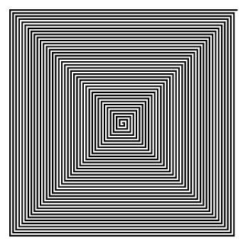
|
|||||||||||||
for i in range(start, end):
Anweisung 1
Anweisung 2
...
|
Dieser Code ähnelt dem vorherigen, aber der Anfangswert von i ist hier 50. Das bedeutet, dass die Turtle beim ersten Durchlauf eine Strecke von 50 Einheiten zurücklegt.
Und zwar nimmt i die Werte 50, 51, 52 usw. bis 149 an.
|
||||||||||||
for i in range(50, 150):
forward(i)
right(90)
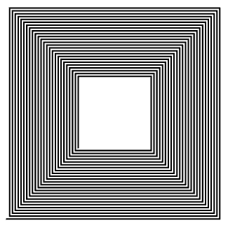
|
|||||||||||||
for i in range(start, end, step):
Anweisung 1
Anweisung 2
...
|
Ähnlich zum vorherigen Code, aber hier wird i bei jedem Durchlauf um 8 erhöht, nicht um 1.
Daher nimmt i die Werte 50, 58, 66 usw., bis 146, an. Diese Anpassung beeinflusst die Form und Dichte der gezeichneten Spirale.
|
||||||||||||
for i in range(50, 150, 8):
forward(i)
right(90)
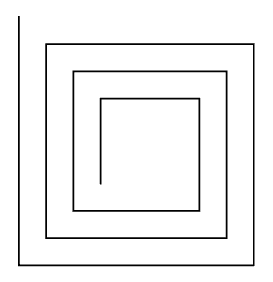
|
Verschachtelte for-Schleifen |
||||||||||||
for _ in range(5):
for _ in range(4):
forward(100)
right(60)
left(36)
|
Diese verschachtelte for-Schleifen machen dasselbe wie die verschachtelte repeat-Schleifen:
repeat 5:
repeat 4:
forward(100)
right(60)
left(36)
Diese Kombination aus dem Zeichnen eines Quadrats und der anschließenden Drehung um 36
Grad wird insgesamt fünfmal wiederholt, wodurch
ein Muster aus fünf Quadraten entsteht, die jeweils
um 36 Grad versetzt sind.
|
||||||||||||
for x in range(-200, 200, 20):
for y in range(-200, 200, 20):
setPos(x, y)
dot(20)
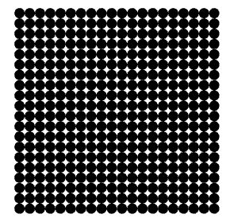
|
Hier werden zwei verschachtelte for-Schleifen verwendet, um ein Gitter zu durchlaufen.
Die Werte für x und y gehen von -200 bis +200 in Schritten von 20.
Mit setPos(x, y) wird die Turtle zu jeder Koordinatenposition bewegt, wo dot(20) dann einen Punkt mit einem Durchmesser von 20 Einheiten zeichnet.
Am Ende ergibt sich ein gleichmäßiges Punkteraster auf dem Zeichenfeld. |
Bedingungen mit if-else
Die
if-else-Struktur ermöglicht es dir, Entscheidungen in deinem Programm zu treffen.
Das bedeutet, dass dein Code je nach Bedingung unterschiedliche Anweisungen ausführt.
|
|||||||||||
setPenWidth(5)
for i in range(5):
if i < 3:
setPenColor("red")
else:
setPenColor("green")
forward(40)
right(90)
forward(40)
left(90)
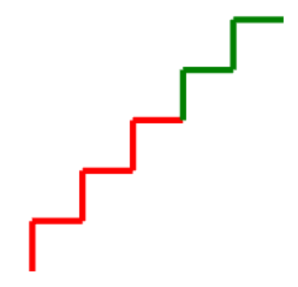
|
In diesem Code wird die if-else-Struktur verwendet, um die Stiftfarbe basierend auf dem Wert der Variablen i festzulegen.
• Wenn i < 3 ist, wird die Stiftfarbe auf Rot gesetzt.
• Andernfalls wird die Stiftfarbe auf Grün gesetzt. Die Anweisungen nach if werden nur dann ausgeführt, wenn die Bedingung wahr ist, sonst werden die Anweisungen nach else ausgeführt.
Im if-Ausdruck werden üblicherweise folgende Vergleichsoperatoren verwendet:
Die Turtle zeichnet Linien in der festgelegten Farbe und erstellt eine Treppe durch die wiederholten Bewegungen innerhalb der for-Schleife.
|
||||||||||||
setPenWidth(5)
for i in range(5):
if i % 2 == 0:
setPenColor("red")
else:
setPenColor("green")
forward(40)
right(90)
forward(40)
left(90)
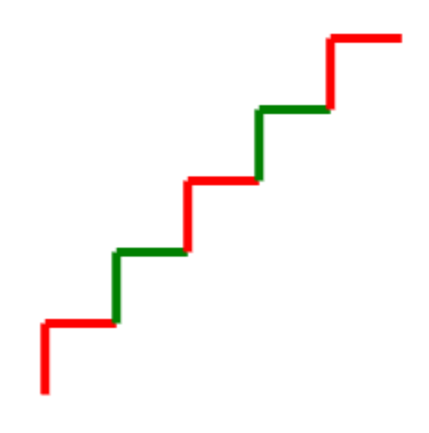
|
Hier überprüft die if-else-Bedingung, ob die Variable i gerade oder ungerade ist.
Um zu überprüfen, ob eine Zahl durch eine andere Zahl teilbar ist, kannst du den Modulo-Operator % verwenden. Der Modulo-Operator gibt den Rest einer Division zurück. Zum Beispiel: 3 % 2 = 1 und 6 % 3 = 0.
• Wenn i eine gerade Zahl ist (i % 2 == 0), wird die Stiftfarbe auf Rot gesetzt.
• Wenn i eine ungerade Zahl ist, wird die Stiftfarbe auf Grün gesetzt.
Dadurch zeichnet die Turtle abwechselnd rote und grüne Linien. |
Mehrere Bedingungen mit if-elif-else
Mit der
if-elif-else-Struktur kannst du mehrere Bedingungen prüfen.
|
|||||||||||
def dreieck(farbe):
setFillColor(farbe)
startPath()
for i in range(3):
forward(100)
right(120)
right(60)
fillPath()
for k in range(6):
if k == 0:
dreieck("red")
elif k == 1:
dreieck("yellow")
elif k == 2:
dreieck("blue")
elif k == 3:
dreieck("green")
else:
dreieck("orange")
 |
In diesem Beispiel wird die if-elif-else-Struktur genutzt, um basierend auf dem Wert der Variablen k die Farbe für das Dreieck festzulegen.
Die Funktion dreieck(farbe) zeichnet ein gefülltes Dreieck in der angegebenen Farbe.
• Wenn k == 0, wird ein rotes Dreieck gezeichnet.
• Wenn k == 1, wird ein gelbes Dreieck gezeichnet.
• Wenn k == 2, wird ein blaues Dreieck gezeichnet.
• Wenn k == 3, wird ein grünes Dreieck gezeichnet.
• Andernfalls (für alle anderen Werte von k) wird ein oranges Dreieck gezeichnet.
|
||||||||||||
speed(-1)
setPenColor("red")
for s in range(4, 220, 8):
if s == 140:
setPenColor("green")
forward(s)
right(90)
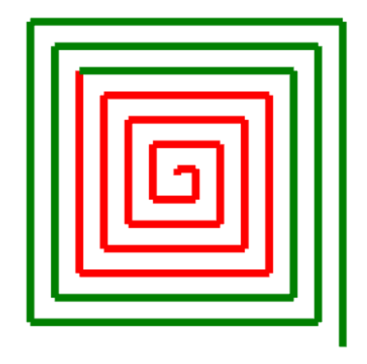
|
In diesem Code wird innerhalb der Schleife die Bedingung if s == 140 geprüft.
• Wenn s den Wert 140 erreicht, wird die Stiftfarbe auf Grün geändert.
• Bis dahin bleibt die Stiftfarbe Rot. Die Turtle zeichnet Linien mit zunehmender Länge und dreht sich jedes Mal um 90 Grad nach rechts, wodurch ein spiralförmiges Muster entsteht. |
||||||||||||
for x in range(-200, 200, 20):
for y in range (-200, 200, 20):
setPos(x, y)
if (x > 0 and y > 0) or (x < 0 and y < 0):
setPenColor("red")
else:
setPenColor("green")
dot(15)
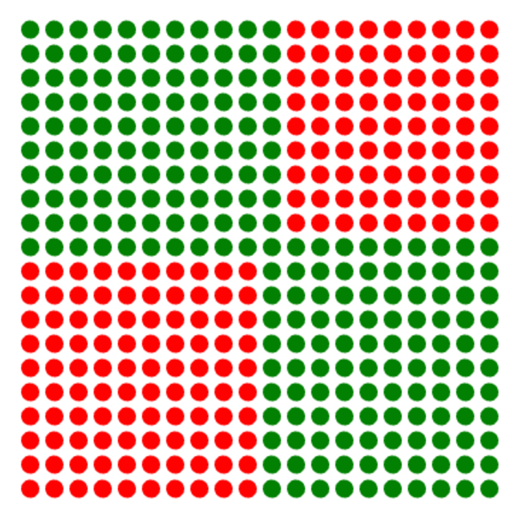
|
In diesem Beispiel wird die Farbe der Punkte basierend auf ihrer Position bestimmt.
• Wenn sowohl x als auch y positiv sind (1. Quadrant) oder beide negativ sind (3. Quadrant), wird die Stiftfarbe auf Rot gesetzt.
• In allen anderen Fällen (2. und 4. Quadrant) wird die Stiftfarbe auf Grün gesetzt. Die Turtle bewegt sich in einem Raster über die Zeichenfläche und zeichnet an jeder Position einen farbigen Punkt, wodurch ein Muster entsteht, das die Quadranten hervorhebt. |